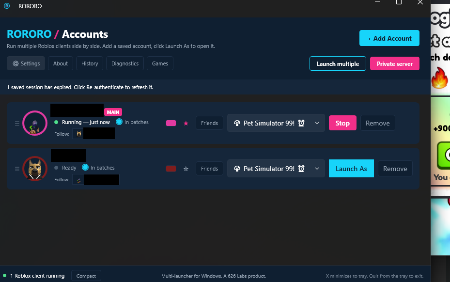
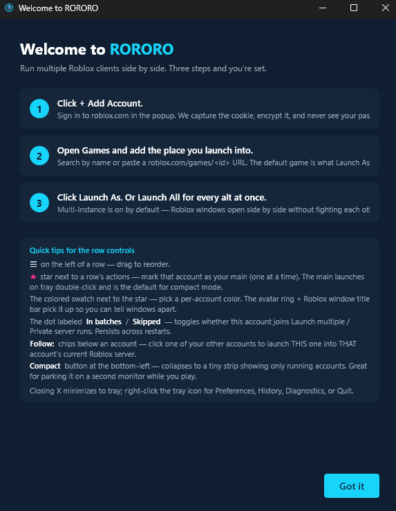
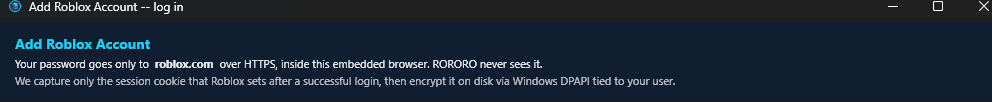
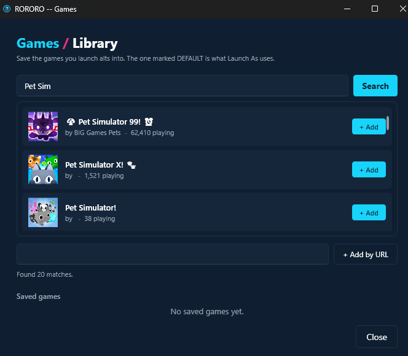
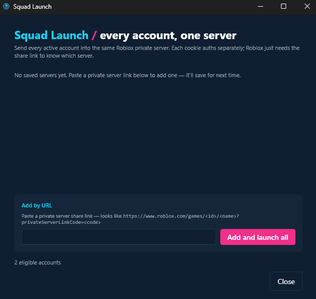
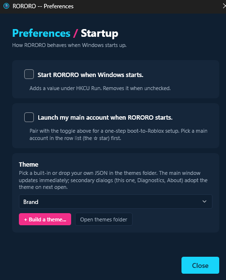
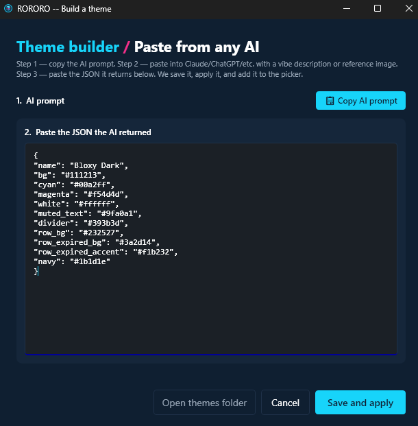
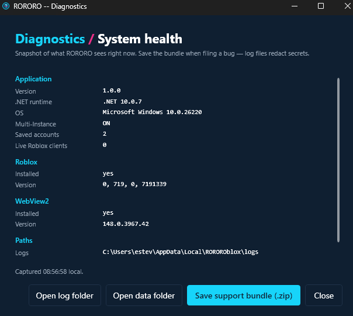
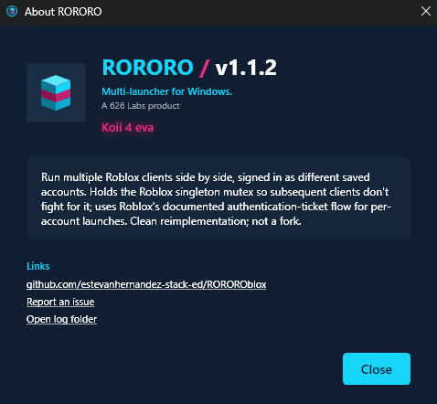

RORORO is a native multi-launcher for Roblox — spawn several clients at once, each signed in as a different saved account, one click each. Native on Windows and macOS, plugin-extensible, free. No injection, no client modification — it holds a singleton lock before launch and starts the official client unmodified.

Three install paths. Pick the trust posture that fits you — they all land the same app.
Signed by Microsoft, bypasses SmartScreen entirely, auto-updates through the Store. One click and you are in — the best path for most people.
Open the Store listingGrab rororo-win-Setup.exe — one click, installs to your user profile. SmartScreen warns once because the installer is unsigned; choose More info → Run anyway. Velopack auto-updates it from there.
The Mac-native sibling — signed and notarized by Apple, Sparkle auto-update. Install with one tap:
brew tap estevanhernandez-stack-ed/rororo
brew install --cask rororo
RORORO Mac on GitHub
The launcher core is the same shape on both platforms — the deep roster tooling below it ships Windows-first.
A tray toggle holds the Roblox singleton lock so multiple clients run side by side. The official client, unmodified — no injection, no DevTools, no registry edits. The tray ring reads at a glance: cyan on, slate off, magenta error.
Add your alts once via an embedded login window. Cookies are encrypted at rest and tied to your machine — DPAPI on Windows, Keychain on macOS — with a passphrase-encrypted export when you move PCs.
One click spawns each saved account straight into your default game, a saved private server, or any pasted share link. Set it once; every alt lands where you pointed it.
Login happens on Roblox's own page inside an embedded browser. RORORO is the window frame, not the form handler — it only ever captures the session cookie set after a successful login.
Send a set of accounts into the same private server in three trust-aware phases — direct joins, an anchor, then followers. Careful mode waits for each alt to land before sending the next.
Pick any friend of your main account — not just your saved alts — and launch straight into their server. If they aren't joinable, RORORO says so instead of bouncing.
Keep saved games and private servers, set defaults, and route different alts into different servers in one batch. Local renames and tags keep a deep roster legible — Roblox-side names untouched.
Every row shows the real game it's in — "In Pet Sim 99", "At Roblox home" — plus an idle chip that turns amber when an alt has sat too long. One tray ping; the threshold is yours.
One flip disguises the whole roster — stand-in names and hand-drawn avatars across every row, banner, modal, and Roblox window title. Private-server links hide behind a reveal-only pill. Disguises persist across restarts.
Cap each alt's FPS from its row before launch — farm accounts low, your main uncapped. Plays nice with Bloxstrap and warns when the two would fight.
Extend RORORO with out-of-process plugins — separate signed apps behind a per-capability consent sheet, SHA-verified at install. The Ur family (Task, OCR, AFK) is live on the marketplace.
Velopack on Windows, Sparkle on macOS. When Roblox shifts under the launcher, the fix ships to you without a reinstall — the compat config even updates remotely, no new binary needed.
The surfaces you actually use — the welcome flow, the add-account window, Squad Launch, settings, the diagnostics tab.
The launch cut · 53 seconds, sound on








Not a port wrapped in a cross-platform runtime — each build is native to its OS, using only public APIs.
sem_unlink + per-launch app copy — public APIs only, no client modification.v1.4 opened RORORO on Windows to plugins — browse them all on the plugin marketplace.
Live per-account uptime, launch counts this session, and mutex state — a pure observer panel for tracking a long farming run.
Pushes "playing with N alts via RORORO" to your Discord status whenever accounts launch.
Watches for an alt's window closing and relaunches it — closes the crashed-alt loop on an unattended run.
manifest.json, manifest.sha256, and plugin.zip.A plugin is your own signed Windows app built against the RORORO plugin contract. Ship it as a GitHub release with three artifacts — manifest.json, manifest.sha256, plugin.zip — and anyone can install it with the steps on the left.
What this is, what the risk is, and whose work it builds on — said plainly, because it should be.
RORORO is not affiliated with, endorsed by, or sponsored by Roblox Corporation. "Roblox" is a trademark of Roblox Corporation, used here only to describe compatibility — RORORO launches the official Roblox client, unmodified.
RORORO doesn't inject into or modify the Roblox client. It holds a Windows mutex name (or a POSIX semaphore on macOS) before launch, then starts the official client. Roblox has stated that multi-instancing "may be considered malicious behavior," so the risk of a ban appears low but is non-zero — and the README says exactly that. Don't run this on accounts you can't afford to lose.
The named-mutex defeat technique originated with MultiBloxy by Zgoly. RORORO is a clean C# reimplementation with substantially expanded scope — account management, structured launch flow, a plugin host — not a fork. The credit, the reference binary, and the caveats are all in PROVENANCE.txt.